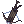
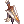
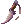
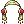

Lucky's PvM Shadow Chaser Guide
| Shadow Chaser | |||||||||||||||||||
|---|---|---|---|---|---|---|---|---|---|---|---|---|---|---|---|---|---|---|---|
| Job Base: | Thief | ||||||||||||||||||
| Written By: | Lu7ky | ||||||||||||||||||
| |||||||||||||||||||
- Please note if images aren't appearing correctly you should re-cache your files! This is different for each browser so look up how, it is a similar process to refreshing your page.
- Visit the Discussion page when done reading to comment and view the Special Thanks Section!
Overview
Lu7ky (Lucky) here, I am a long time Ragnarok Online player and have quite a bit of experience, now, with NovaRO. I don't play PVP at all yet so I want to play all classes as PVM only. I do not play Shadow Chaser as a main class but found it one of the most fun as you can be unpredictable and adaptable.
- Shadow Chaser is primarily a PVP orientated class, make sure you save some Zeny if you want to try it out. As this guide is PVM Focused, I will not be going into PVP so some parts you are expecting won't be here.
- Jack of all trades, master of none, the Shadow Chaser, (SC for short) is very versatile for the fact that they can copy most skills of players or monsters.
- Has a sweet alternate outfit!
Shadow Chaser pros
- They can adapt their stats for different builds. (Use Build Manager NPC to make this easier).
- Gets large base max HP. Stay in those fights longer and finish off MVPs before someone gets to it while you respawn.
- Low ASPD penalties. Keep up the attack with a barrage of attacks, setting off your Auto Shadow Spell.
- Reliable damage overall. Be effective as a DPS class and have a role in the game.
- Can use a variety of daggers, swords and bows them useful at range or up close.
Shadow Chaser cons
- Very hard to master. This class is not for the feint of heart, I do not recommend this as a first character for new players.
- They do not excel in PVM as well as most classes. But you and I sure will try to prove them wrong.
- Tricky to switch on the fly as ranged, due to having very different gears for each build.
Stat Overview
- Strength (STR) Provides ATK for melee weapons and a reduced amount for bows. Increases weight limit and resistance to certain skills.
- Agility (AGI) Adds FLEE, ASPD and Soft DEF (much less than VIT would). Shortens animation delay. At 100 points gives Immunity to Sleep and Bleeding.
- Vitality (VIT) Adds Max HP, Soft DEF, HP recovery and makes healing items more effective. At 100 points gives Immunity to Stun, Poison and Deadly Poison.
- Intelligence (INT) Adds MATK Max SP, Soft MDEF, SP recovery and makes SP restoring items more effective. Decreases Variable Cast Time (Half as much as DEX). At 100 points gives Immunity to Silence.
- Dexterity (DEX) Adds ATK for bows and a reduced amount for melee weapons. Increases HIT, ASPD, MATK and Soft MDEF. Decreases Variable Cast Time.
- Luck (LUK) Adds ATK (less than STR), MATK (less than INT), CRIT, HIT, Perfect Dodge and FLEE. At 100 points gives Immunity to Curse.
How to Copy Skills
Dueling
- To get into a fight with players you must duel them and have them accept.
- To start the duel, first type
@duel, (no comma) then type the players name for example:@duel Lu7ky - The other player can then type
@acceptor@rejectbased (so ask first!) Note, this is allowed in towns, take advantage!
- To start the duel, first type
- To leave a duel simply have a player die and the other type
@leaveor have both players type@leave.
Plagiarism
- With
 Plagiarism learned, copy applicable first and second job skills simply by being hit with it. Note, you must survive the hit.
Plagiarism learned, copy applicable first and second job skills simply by being hit with it. Note, you must survive the hit. - With
 Preserve buff activated, keep your Plagiarism skill copied for the duration of the buff.
Preserve buff activated, keep your Plagiarism skill copied for the duration of the buff.
Reproduce
- With
 Reproduce buff active (on) take a hit and survive from the spell you desire to copy.
Reproduce buff active (on) take a hit and survive from the spell you desire to copy. - Turn off Reproduce buff to hold the skill until a new one is learned via this process.
Lists of Copy-able Spells
Skills
Thief Skills
| Skill | Notes |
|---|---|
 Double Attack Double Attack
|
Attacks twice with daggers by chance. Passive skill. |
 Improve Dodge Improve Dodge
|
Improves Flee Rate. Passive skill. |
 Hiding Hiding
|
Become invisible for a time, yet immobile. Allows use of  Raid. You cannot attack or use most skills while hidden. Insect, Demon and MVP monsters can still detect and attack you. Reuse the skill to become visible again. Raid. You cannot attack or use most skills while hidden. Insect, Demon and MVP monsters can still detect and attack you. Reuse the skill to become visible again.
|
 Back Slide Back Slide
|
Get out of trouble fast by instantly sliding backwards 5 cells. You can turn in place using /bingbing or /bangbang allowing you to control your facing direction and there for movement direction. |
 Pick Stone Pick Stone
|
Simply picks up a Stone item anywhere on the field to use of  Throw Stone. Throw Stone.
|
| Throw Stone
|
Requires 1 Stone, always does 50 points of damage but does not ignore card reduction, can stun and is generally used to provoke a monster. |
Archer-Based Rogue Skills
| Skill | Notes |
|---|---|
 Vulture's Eye Vulture's Eye
|
Increases Range with a bow weapon and requires level 10 to use  Double Strafe.Passive skill. Double Strafe.Passive skill.
|
| Double Strafe
|
Does 2 hits with 1 arrow. Bow-exclusive skill. |
Non-Archer-Based Rogue Skills
| Skill | Notes |
|---|---|
 Back Stab Back Stab
|
Deals a single attack up to 700% ATK damage, when used jumps behind an enemy. Can hit twice with a dagger equipped! |
 Tunnel Drive Tunnel Drive
|
Allows cloaked movement via the Hide Skill from Thief albeit very slow. |
| Raid
|
Makes an AOE attack that can blind and stun targets. Can only be used while hidden. Increases damage on targets hit for 10 seconds. |
| Plagiarism
|
Increases ASPD. By being hit by a non-monster exclusive skill will add one that for you to use, being hit with another, will overwrite the saved skill. Can copy up to second job skills. |
 Close Confine Close Confine
|
Grabs an opponent and holds both of you in place for a duration. Flee Rate increases while confined. Knockback effects still apply and cancel Close Confine. |
Stalker Skills
| Skill | Notes |
|---|---|
 Chase Walk Chase Walk
|
While invisible use this skill to follow an enemy undetected but still attack-able by spells that hit an AOE. Leaves footprints but increases STR after being invisible for 10 seconds. |
 Reject Sword Reject Sword
|
When activated, buffs the player, reducing monster attacks by half and returns the other half of damage for the first 3 hits with a 75% chance. |
| Preserve
|
The current Plagiarism skill cannot change when hit by a new spell for the duration that this buff is active.
|
Shadow Chaser Skills
| Skill | Notes |
|---|---|
| Reproduce
|
When active, enables the Shadow Chaser to copy a second skill in addition to the one copied via Plagiarism. When recast, preserves the copied skill indefinitely. Can copy third job skills. Also, the doubled SP consumption is not applied in NovaRO. Always is a manual cast.
|
 Auto Shadow Spell Auto Shadow Spell
|
When activated, buffs the player, allowing use of a magic skill by chance, copied via your Plagiarism for no SP cost (other than this skill's activation).
|
 Triangle Shot Triangle Shot
|
Shoot 3 arrows at a target and has a low chance at knock back. Uses AGI to increase damage. |
 Body Painting Body Painting
|
Spray paint around you revealing hidden enemies and reducing their ASPD. Has a chance to blind them. Requires 1 Paint Brush(not consumed) and 1 Surface Paint(consumed). |
 Deadly Infection Deadly Infection
|
Transfer all status ailments by chance to those attacking you or those you attack by chance (does not cure you of them). |
 Feint Bomb Feint Bomb
|
Paint an image of yourself on the ground that will explode, dealing damage to those in the area, knocking them back. |
 Emergency Escape Emergency Escape
|
Requires 1 special alloy trap. Immediately backslide after setting a basic trap on the ground. |
 Full Throttle Full Throttle
|
Increases all stats, fully recovers HP and increases Movement Speed at the cost of draining SP and HP per second. Inflicts Rebound status when finished it's duration. |
Arrow Build
Overview
- Good for keeping out of direct combat and great for leveling.
- Easy to learn, the Arrow Build is a great choice for beginners and for lower level characters as at this point you can really compete with other Ranger's and Minstrel's damage.
Stats
- STR - 1 Increases damage output. Increases Weight limit, not needed for this build.
- AGI - ~100 for Dodge, ASPD and Triangle Shot Damage (Not so much ASPD as when using
 Arrow Storm).
Arrow Storm). - VIT - 92(100 with bonuses for resistances) to increase max HP and SoftDEF.
- INT - ~100 to reduce variable cast time, increase max SP and MDEF.
- DEX - 100~120 Depending on what equipment you use (120 for (
 Temporal Boots of Dexterity [1])
Temporal Boots of Dexterity [1]) - LUK - 1 Optional. Increases CRIT Rate and CRIT Damage as well as perfect dodge.
Opt for more AGI when using Triangle Shot or  Severe Rainstorm often.
Severe Rainstorm often.
Skills Set Example
- Rogue/Stalker Portion
- Shadow Chaser Portion
Arrow Build Equipment
| Item | Type | Obtained By | Notes |
|---|---|---|---|
 Rideword Hat [1] Rideword Hat [1]
|
Upper Headgear | Nova Shop or Custom Headgear Quest | Drains HP and has a chance to leech HP and SP per attack (better amounts at +9). |
 Ship Captain Hat [1] Ship Captain Hat [1]
|
Upper Headgear | Nova Shop or Market | Adds Dex, Max HP and ranged attack damage. |
| Old Shadow Handicraft [1] | Upper Headgear | Nightmare Biolabs or Market (then craft) | Adds Triangle Shot damage among reducing cooldowns for Masquerade skills based on refine. Also gives max HP, SP, ATK and MATK based on refine. Can be heavily enchanted.
|
 Fancy Feather Hat GC [1] Fancy Feather Hat GC [1]
|
Upper Headgear | Master of Coin (Gold Coins) | Boosts ATK per 2 refine, and more at +9 along with ASPD. Boosts Ranged damage at +7 and +11. Has various effects based on garment and the corresponding refine. |
 Fancy Feather Hat EVT [1] Fancy Feather Hat EVT [1]
|
Upper Headgear | Master of Coin (Weekly Coins) | Boosts ATK per 2 refine, and more at +9 along with ASPD. Boosts Ranged damage at +7 and +11. Has various effects based on garment and the corresponding refine. |
 New Wave Sunglasses New Wave Sunglasses
|
Mid Headgear | Custom Headgear Quest | Reduces after cast delay by 10%. |
 New Wave Sunglasses [1] New Wave Sunglasses [1]
|
Mid Headgear | Custom Headgear Quest | Reduces after cast delay by 5%. |
 Monocle [1] Monocle [1]
|
Mid Headgear | Drop (Owl Baron or Owl Viscount) | Cheapest slotted middle headgear. |
 Crimson Magical Booster [1] Crimson Magical Booster [1]
|
Mid Headgear | Get a  Crimson Magical Booster [1] and awaken it. Becomes untradable. Crimson Magical Booster [1] and awaken it. Becomes untradable.
|
Can be enchanted (But not after being awakened). |
 Gangster Scarf Gangster Scarf
|
Lower Headgear | Nova Shop or Custom Headgear Quest | Adds ATK. |
 Pirate Dagger Pirate Dagger
|
Lower Headgear | Nova Shop or Market | Adds ATK. |
 Well-Chewed Pencil Well-Chewed Pencil
|
Lower Headgear | Nova Shop or Market | Adds DEX and HIT. |
 Rosary in Mouth Rosary in Mouth
|
Lower Headgear | Custom Headgear Quest | Adds all stats, ATK, MATK and MDEF. |
 Magical Rosary in Mouth Magical Rosary in Mouth
|
Lower Headgear | Custom Headgear Quest | Adds all stats, and perfect dodge. |
 Eden Group Armor [1] Eden Group Armor [1]
|
Armor | Eden Group Equipment Quests | Free effective starter gear with 0 weight. |
 Vigilante Suit Vigilante Suit
|
Armor | Howard | Adds DEX. Increases long range damage per 2 refines and at +9 or higher increases Triangle Shot damage. Can be enchanted three times!
|
 Hero Hidden Cloth [1] Hero Hidden Cloth [1]
|
Armor | Bios Island or Morse Cave | Adds max HP and SP, damage to  Fatal Menace and Triangle Shot, has a chance to give bonus Crit, Flee, ATK and MATK while attacking. Fatal Menace and Triangle Shot, has a chance to give bonus Crit, Flee, ATK and MATK while attacking.
|
 Abusive Robe [1] Abusive Robe [1]
|
Armor | Comissary Arner | Bypasses DEF of Demihuman, Demon and Undead monsters. Enables Level 1 Improved Concentration. |
 Illusion Armor A-Type [1] Illusion Armor A-Type [1]
|
Armor | Illusion | Adds ATK (more per 2 refine) ASPD at +7. Combos with Illusion Engine Wings. Can be Enchanted. |
 Agi Soutane [1] Agi Soutane [1]
|
Armor | Odin's Temple 4 / Odin's Past | Adds max HP, SP, long range damage per 2 refine, AGI per 3 refine and physical damage on angels and demons per 4 refine. Can be Enchanted. |
 Eden Bow III Eden Bow III
|
Weapon | Eden Group Equipment Quests | A simple free bow with 0 weight. |
| Vigilante Bow [2] | Weapon | Drop (Buffalo Bandit) | Increases long range damage for every 20 base DEX. At +7, further increases long range damage. At +9 increases Double Strafe Strafe damage by 50%
|
 Orc Archer Bow Orc Archer Bow
|
Weapon | Drop (Orc Archer) | A set that drops arrows boosts damage while used with Steel Arrow (required to deal decent damage with this bow). |
 Crimson Bow [2] Crimson Bow [2]
|
Weapon | Drop (Various Monsters) | Adds ATK per refine (multiplies by itself). |
| Burning Bow [1] | Weapon | Drop (Various Monsters) | When used with the proper arrows increases damage. Has a chance to Stone Curse > (Earth Property). Has a chance to Freeze > (Water Property). Has a chance to Cast Wind Blade > (Wind Property). |
| Infinity Bow [1] | Weapon | Infinite Space | A simple bow that can be enchanted twice! |
| Narcissus Bow [2] | Weapon | Monster Hunter | Increases ATK per 2 refine and long ranged damage per 3. At +9 Increases Severe Rainstormdamage, and reduces its cooldown at +11. Combos with Ancient Hero Boots. Can be enchanted!
|
|  Rapid Fire [2] | Weapon | Bioresearch Laboratory | Increases long ranged damage per and increases ATK per refine. At +9 and 11 Increases Triangle Shot damage. Can be enchanted.
|
 Giant Snake Skin [1] Giant Snake Skin [1]
|
Garment | Faceworm's Nest (Predetermined enchants) | Adds quite a bit of stats that are chosen randomly, can give a special stat such as; max HP, SP ATK, MATK, ASPD, or cast delay reduction. Best used with temporal boots. |
 Nidhoggur's Shadow Garb [1] Nidhoggur's Shadow Garb [1]
|
Garment | Drop (Nidhoggur's Shadow) | Adds resistance to all elements, MDEF , max SP per refine and can leech SP. Best used with  Fancy Feather Hat GC [1] . Fancy Feather Hat GC [1] .
|
 Heroic Backpack [1] Heroic Backpack [1]
|
Garment | Master of Coin, Market, Monster Hunter, Battlegrounds | Can Add ranged attack, ATK, MATK, or critical power If +7 or 9. Can also add ASPD and neutral resistance. Allows use of Greed skill. |
 Violet Halo [1] Violet Halo [1]
|
Garment | Violet Halo | Adds ranged attack, ATK, MATK, and critical power per 3 refine. At +11 Reduces ACD. Best used in a set. |
| Illusion Engine Wing B-Type [1]
|
Armor | Illusion | Adds max HP (more per 2 refine) At +7 reduces variable cast time. Combos with Illusion Engine Legs. Can be Enchanted. |
| Temporal Boots of Dexterity [1]
|
Footgear | Crafting Old Glast Heim | Adds max MDEF, HP, SP and DEX per refine. If Stat is 120+ Reduces fixed cast time and ranged attack power, can be enchanted heavily though somewhat random. |
 Illusion Leg A-Type [1] Illusion Leg A-Type [1]
|
Footgear | Illusion | Adds max SP (more per 2 refine) At +7 increases ranged damage. Combos with Illusion Engine Armors. Can be Enchanted. |
| Ancient Hero Boots [1] | Footgear | Monster Hunter | Adds max HP, SP (more per 3 refine) At +7 and 9 reduces fixed cast time. At +11 reduces after cast delay. |
 Silversmith's Bracelet [1] Silversmith's Bracelet [1]
|
Accessory | Drop (Monsters in Old Glast Heim) | Increases MDEF all stats and allows the skill Spell Breaker. |
 Vigilante Badge Vigilante Badge
|
Accessory | Affable Lady | Adds Flee. Increases long range damage by 5%. Can be enchanted twice! |
 Pendant of Maelstrom [1] Pendant of Maelstrom [1]
|
Accessory | Craft Nightmarish Jitterbug | Adds ATK, MATK, all stats. Casts  Maelstrom when attacked magically. Maelstrom when attacked magically.
|
 Physical Enhancer Ring [1] Physical Enhancer Ring [1]
|
Accessory | Geffen Magic Tournament | Adds ATK, Can be enchanted. |
| Illusion Booster R [1] | Accessory | Illusion | Adds ATK. Can be Enchanted. |
 Illusion Booster L [1] Illusion Booster L [1]
|
Accessory | Illusion | Adds ATK. Can be Enchanted. |
 King Schmidt`s Strong Insignia [1] King Schmidt`s Strong Insignia [1]
|
Accessory | Fall of Glast Heim | Adds ATK. Can be Enchanted. |
| King Schmidt`s Thousand Bow Insignia [1] | Accessory | Fall of Glast Heim | Adds long ranged damage. Can be Enchanted. |

Cards
 Essence of Evil DEX3 Can be carded into any slot giving more DEX and HIT at the cost of LUK.
Essence of Evil DEX3 Can be carded into any slot giving more DEX and HIT at the cost of LUK.- Essence of Evil AGI3 Can be carded into any slot giving more AGI and Flee at the cost of VIT.
 Archer Skeleton Card Adds ranged attack damage or White Knight Card Adds ATK and damage on Medium and large monsters. These are your main weapon damage cards.
Archer Skeleton Card Adds ranged attack damage or White Knight Card Adds ATK and damage on Medium and large monsters. These are your main weapon damage cards.- Menblatt Card Adds ranged attack per 10 DEX.
- Byrogue Card Adds ATK, MATK.
- Beholder Master Card Adds ASPD (more at +10 and +14 weapon)
- Shotgun Buffalo Bandit Card Adds AGI and HIT.
- Revolver Buffalo Bandit Card Adds STR and ATK. (more when used with Shotgun Buffalo Bandit Card)
- Furious Hero Card Adds ATK and a chance to use Endure in melee.
Example end game gears
Example 1
- Old Shadow Handicraft [1] Enchanted with AGI, or DEX and Master Archer (Has 10 levels) with swap option of +9 Rideword Hat [1] -
 Furious Hero Card
Furious Hero Card - Crimson Magical Booster [1] - Furious Hero Card
or New Wave Sunglasses (or slotted awakened version New Wave Sunglasses [1])
- Rosary in Mouth(or awakened version Magical Rosary in Mouth
- +9 Agi Soutane [1] with
 Agi Blessing and (aim for) AGI Enchants
Agi Blessing and (aim for) AGI Enchants - +11 Rapid Fire [2] (or higher). Preferably enchanted with Gertie's Memory and
 Expert Archer 3
Expert Archer 3 - Violet Halo [1] (If combined with Crimson Magical Booster [1]).
or
 +9 Illusion Engine Wing A-Type [1] With 2
+9 Illusion Engine Wing A-Type [1] With 2  Fast enchants and
Fast enchants and  Above All -
Above All -  Menblatt Card (If needing ASPD)
Menblatt Card (If needing ASPD)
 Temporal Boots of Dexterity [1] Enchanted with
Temporal Boots of Dexterity [1] Enchanted with  Expert Archer4 and
Expert Archer4 and  Hawk Eye.
Hawk Eye.- Illusion Booster R [1] (Enchanted with
 Expert Archer 5 +
Expert Archer 5 +  ASPD Lv. 4 +
ASPD Lv. 4 +  Spell 5) - Revolver Buffalo Bandit Card
Spell 5) - Revolver Buffalo Bandit Card - King Schmidt`s Strong Insignia [1] (Enchanted with Thousand Bow Expert Archer 5 and preferably AGI or DEX +3-5) - Shotgun Buffalo Bandit Card
or King Schmidt`s Thousand Bow Insignia [1] Same Enchants and card as above.
Notes
- A +15 Crimson Bow [2] will do more damage than a +15 Vigilante Bow [2], for damage purpose it is recommended to have a Crimson at refines of 10+ and when not lacking in SP (full set bonus of reduced Triangle Shot SP cost).
- Fancy Feather Hat GC [1] Compliments with the following to
- Nidhoggur's Shadow Garb [1] Boost Arrow Stormdamage. (Per 2 garment refine.)
- Leather Of Tenrdillion [1] Boost Severe Rainstormdamage. (Per 2 garment refine.)
 Ancient Cape [1] Boost Triangle Shot damage. (Per 2 garment refine.)
Ancient Cape [1] Boost Triangle Shot damage. (Per 2 garment refine.)
Gameplay
- The moment you can, grab Arrow Storm or Severe Rainstorm.
- These will need to be copied from an archer third job class using Reproduce. Do not turn on Reproduce once the skill has been copied, it will lock in place and unless you want to switch would absorb the next damaging skill you take.
- This build is very viable for Gramps missions and can get you to level 175 quite easily.
- AGI stat at this point is mostly for dodge but is required for Severe Rainstorm damage to be higher.
- Keep in mind you will not do full damage with either of the above skills
- When in a party Arrow Storm is more effective vs monsters that will die in one or a few hits from you and your party members firing AOE skills all at once. On the other hand, Severe Rainstorm is greater for smaller parties or soloing as it makes targets flinch and deals damage over a duration allowing you to follow up easier.
- You may choose to opt for INT, LUK and DEX and go with a trap arrow build utilizing flinching attacks, traps copied from ranger classes or the
 Ankle Snare from Emergency Escape and your auto attacks ( Triangle Shot and Double Strafe as included). Allow the monster to slowly follow you by alternating these, most monsters are susceptible to flinch attacks such as those from Fire Wall or Fire Walk.
Ankle Snare from Emergency Escape and your auto attacks ( Triangle Shot and Double Strafe as included). Allow the monster to slowly follow you by alternating these, most monsters are susceptible to flinch attacks such as those from Fire Wall or Fire Walk. - Keep in mind with many monsters in the target area that Severe Rainstorm is great at triggering effects of your equipment such as Hawk Eye, Speed of Light and Lucky Day due to the sheer amount of hits. Try using this with and following up with skills like Feint Bomb, Triangle Shot, or traps (again from rangers or Emergency Escape).
Skills to grab for Auto Shadow Spell
- Knock back spells Such as
 Jupitel Thunder
Jupitel Thunder - Freezing Spells such as
 Frost Nova and
Frost Nova and  Frost Diver
Frost Diver - AOE spells such as
 Meteor Storm and
Meteor Storm and  Lord of Vermillion
Lord of Vermillion
- A good spell that combines all of these is Storm Gust but may mess up your aim.
Spell Enhancing Cards
- Salamander Card Boosts
 Fire Pillar and Meteor Storm damage.
Fire Pillar and Meteor Storm damage. - Hill Wind Card Boosts
 Thunder Storm, Jupitel Thunder and Lord of Vermillion damage.
Thunder Storm, Jupitel Thunder and Lord of Vermillion damage. - Laurell Weinder Card Boosts Frost Nova and Storm Gust damage.
- Pitman Card Boosts
 Earth Spike and
Earth Spike and  Heavens Drive damage.
Heavens Drive damage. - Red Ferus Card Boosts Fire Pillar and Meteor Storm damage.
- Fire Condor Card Boosts
 Fire Ball Damage and reduces it's manual, variable cast time.
Fire Ball Damage and reduces it's manual, variable cast time.
Auto Shadow Spell Build
Overview
- For experienced players and high level content.
- High sustainable damage and quick.
- Deals magic and physical damage, making few opponents immune.
Stats
- STR - 1 or 50+, Increases damage output. Increases Weight limit.
- AGI - 120 for Dodge and ASPD, (120 for
 Temporal Boots of Agility [1] to be most effective).
Temporal Boots of Agility [1] to be most effective). - VIT - 92+ to increase max HP and SoftDEF.
- INT - ~100 or 120 to reduce variable cast time, increase max SP and MDEF. (120 for
 Temporal Boots of Intelligence [1] to be most effective).
Temporal Boots of Intelligence [1] to be most effective). - DEX - 100 Increases HIT and decreases Variable Cast Time
- LUK - 1 Optional. This may be used instead of Dex for criticals to get guaranteed hits.
Skill Set Example
- Rogue/Stalker Portion
- Shadow Chaser Portion
Melee / Auto Shadow Spell Build Equipment
| Item | Type | Obtained By | Notes |
|---|---|---|---|
 Shadow Handicraft [1] Shadow Handicraft [1]
|
Upper Headgear | Free from job change to Shadow Chaser | Adds INT, AGI, MDEF and can also add ATK and Flee. Free when changing to Shadow chaser. |
| Rideword Hat [1]
|
Upper Headgear | Nova Shop or Custom Headgear Quest | Drains HP and has a chance to leech HP and SP per attack (better amounts at +9). |
| Inconspicuous Hat [1] | Upper Headgear | Nova Shop or Market | Adds MATK (more if INT 120+). At +7 adds ASPD and adds more MATK for each level of Shadow Spell learned. At +9 adds even more MATK! |
 Wickebine's Black Cat Ears Wickebine's Black Cat Ears
|
Upper Headgear | Custom Headgear Quest | Adds critical attack damage, FLEE and Gives a chance to bypass MDEF by 5%. |
 Vibrant Rose [1] Vibrant Rose [1]
|
Upper Headgear | Horror Toy Factory | Adds MATK per refine, can cast Soul Drain when using spells. Can be enchanted twice! |
| Old Shadow Handicraft [1] | Upper Headgear | Nightmare Biolabs or Market (then craft) | Adds Triangle Shot damage among reducing cooldowns for Masquerade skills based on refine. Also gives max HP, SP, ATK and MATK based on refine. Can be heavily enchanted. |
| Monocle [1]
|
Middle Headgear | Drop (Owl Baron and Owl Viscount) | Cheapest slotted middle headgear. |
 Sigrun's Wings Sigrun's Wings
|
Mid Headgear | Nova Shop or Market | Adds ASPD. |
 Black Frame Glasses [1] Black Frame Glasses [1]
|
Mid Headgear | Nova Shop or Market (x2) | Adds INT and MDEF. |
 Angel Spirit Angel Spirit
|
Mid Headgear | Nova Shop or Market | Adds ATK, MATK and STR. |
 CD In Mouth CD In Mouth
|
Lower Headgear | Nova Shop or Market | Randomly casts bolts for a short time on physical attacks. |
 Ninja Scroll Ninja Scroll
|
Lower Headgear | Nova Shop or Market | Adds MATK. |
 Rainbow Scarf Rainbow Scarf
|
Lower Headgear | Nova Shop or Market | Adds MATK MDEF and INT. |
 Flattery Robe [1] Flattery Robe [1]
|
Armor | Comissary Arner | Enables Level 1 Endure. Adds MATK (more at level 120 and 140) Can be Enchanted |
| Agenda Robe [1] | Armor | Strasse | Adds MATK (more at level 120 and 140). Enables Level 1 Spell Breaker. Can be Enchanted |
 Excellion Suit Excellion Suit
|
Armor | Verus PLUTO_09. | Provides up to 10 VIT Increases maximum HP and is indestructable. Can be Enchanted |
 Illusion Armor B-Type Illusion Armor B-Type
|
Armor | Illusion | Increases MATK and more per 2 refine. At +7 Reduces VCT. Best used with some/all of the set. Can be enchanted. |
 Thorny Buckler [1] Thorny Buckler [1]
|
Shield | Drop (Knocker) | Adds MDEF. Best used in the set. |
| Cursed Knight's Shield [1] | Shield | Nova Shop, Kings Treasure. | Has a chance to recover SP when being hit and HP from attacking. Adds ASPD, ATK and MATK by default. More ATK and MATK at +7, 1 ASPD at +9 and delay after skill reduction at +12. Can Be [1] enchanted. |
| Ultralight Magic Shield [1] | Shield | Drop (Cutie) | Adds hard defense bypass and based on refine, ASPD and neutral damage resistance. |
 Purified Knight's Shield [1] Purified Knight's Shield [1]
|
Shield | Upgrade from Cursed Knight's Shield. | Has a chance to recover SP when being hit and HP from attacking. Adds ASPD, ATK and MATK by default. More ATK and MATK at +7, 1 ASPD at +9 and delay after skill reduction at +12. Can Be [2] enchanted. |
| Eden Dagger III | Weapon | Eden Group Equipment Quests | A starter weapon with MATK bonus, 0 weight. |
 Faceworm Queen's Leg [2] Faceworm Queen's Leg [2]
|
Weapon | Faceworm's Nest | Adds MATK and INT. Can cause you to transform and use earthquake, poison element. |
 Crimson Dagger [2] Crimson Dagger [2]
|
Weapon | Drop (Various Monsters) | Adds ATK and MATK per refine (multiplies by itself). |
 Infinity Dagger [1] Infinity Dagger [1]
|
Weapon | Infinite Space | Adds MATK. Can be enchanted twice! |
| Elemental Sword [3] | Weapon | Drop (Cobalt Mineral) | Adds stats, MATK and neutral damage, can auto cast random Bolt spells. |
 Sealed Magic Sword [2] Sealed Magic Sword [2]
|
Weapon | Drop (Hear Hunter Evil(Ebel)) | Reduces Max Sp (can be recovered with refines), adds MATK with +7 and +10, +1 ASPD at +10, auto casts  Fire Bolt at 10% chance. Enchantable at Malangdo. Fire Bolt at 10% chance. Enchantable at Malangdo.
|
 Sealed Maximum Sword [2] Sealed Maximum Sword [2]
|
Weapon | Drop (Hear Hunter Evil(Ebel)) | Reduces max HP (can be recovered with refines), adds ATK at +7 and +10, +1 ASPD at +10, auto casts  Cold Bolt at 10% chance. Enchantable at Malangdo. Cold Bolt at 10% chance. Enchantable at Malangdo.
|
| Madogum [2] | Weapon | Craft (Monster Hunter) | Adds MATK (more per refine), ASPD. Increases Fire, Water, Earth and Wind magic damage at +9. At +11 has a chance to increase magic damage and MATK. |
|  Platinum Dagger [2] | Weapon | Bioresearch Laboratory | Adds MATK (more per 2 refine), ASPD (more per 3 refine). Increases magic damage at +9. At +11 auto casts  Psychic wave. Psychic wave.
|
| Jewel Detector MK47 [2] | Weapon | Dynite Exchange | Adds MATK, Fire and Neutral magic damage. At +7 Increases ASPD and MATK. At +9 has a chance to increase magic damage and further increases Fire and Neutral magic damage. At +11 Reduces delay after skill (ACD) by 20%. |
| Giant Snake Skin [1]
|
Garment | Faceworm's Nest instance (Predetermined enchants) | Adds quite a bit of stats that are chosen randomly, can give a special stat such as; max HP, SP ATK, MATK, ASPD, or cast delay reduction. Best used with temporal boots. |
 Excellion Wing Excellion Wing
|
Garment | Verus PLUTO_09. | Provides up to 10 Perfect Dodge. Increases Flee per refine. Can be Enchanted |
| Illusion Engine Wing B-Type
|
Garment | Illusion | Adds max HP (more per 2 refine). At +7 reduces VCT. Best used with all or part of the set. Can be enchanted. |
| Temporal Boots of Agility [1]
|
Footgear | Crafting (From Old Glast Heim rewards) | Adds max MDEF, HP, SP and ASPD per refine. If Stat is 120+ adds ASPD, can be enchanted heavily. |
| Temporal Boots of Intelligence [1]
|
Footgear | Crafting (From Old Glast Heim rewards) | Adds MATK, max HP and SP per 3 refines and more at base INT 120. Can be enchanted multiple times! |
 Illusion Engine Leg B-Type Illusion Engine Leg B-Type
|
Footgear | Illusion | Adds max SP (more per 2 refine). At +7 Increases magic damage. Best used with all or part of the set. Can be enchanted. |
 Alchemy Glove [1] Alchemy Glove [1]
|
Accessory | Drop (Various Monsters) | Adds INT, MDEF, fire damage. Can cast Fire Ball or Fire Bolt while attacking or using magic. Decreases water damage and resistance.
|
| Advanced Ring Of Flame Lord | Accessory | Eden Group Crystal Synthesis | Adds STR, VIT, ATK, fire resistance. Can auto cast a variety of skills when attacking. Best used in the set. |
 Advanced Ring Of Resonance Advanced Ring Of Resonance
|
Accessory | Eden Group Crystal Synthesis | Adds AGI, VIT, MATK, MDEF. Can auto cast a variety of skills when being attacked. Best used in the set. |
 Magic Intensifier Ring [1] Magic Intensifier Ring [1]
|
Accessory | Geffen Magic Tournament (Geffen Magic Contest Coins) | Adds MATK. |
| Silversmith's Bracelet [1]
|
Accessory | Old Glast Heim | Increases MDEF all stats and allows the skill Spell Breaker. |
 Evil Gloves [1] Evil Gloves [1]
|
Accessory | Horror Toy Factory | Adds max HP and SP. Allows use of Spider Web. Can be enchanted with stat 1~3, 1-3 times. Auto casts powerful spells when receiving physical attacks and when dealing magical attacks. |
 Pendant of Harmony Pendant of Harmony
|
Accessory | Nightmarish Jitterbug | Adds MATK, resistances, HP and SP recovery. Casts Renovatio or Sanctuary when attacked. Decreases STR. Best used in the set. |
 Pendant of Chaos Pendant of Chaos
|
Accessory | Nightmarish Jitterbug | Adds ATK, resistances, and can cast Chaos around you. Decreses INT. Best used in the set. |
| Pendant of Maelstrom [1]
|
Accessory | Craft Nightmarish Jitterbug | Adds ATK, MATK, all stats. Casts Maelstrom when attacked magically.
|
 King Schmidt's Divine Power Insignia [1] King Schmidt's Divine Power Insignia [1]
|
Accessory | Craft Fall of Glast Heim | Adds MATK. Can be enchanted heavily. |
 Illusion Battle Chip R [1] Illusion Battle Chip R [1]
|
Accessory | Illusion | Adds MATK. Can be enchanted heavily. |
Cards
- Byrogue Card Adds ATK, MATK. Should be your main armor card it is made especially for Rogue class and above.
- Antique Book Card Adds MATK per 10 INT in your garment will boost your Auto Shadow Spell damage.
- Outrageous Cookie Card Adds ATK, MATK and reduces max HP per 2 refine. If you can afford one of these and have a decent refine on your boots, great if not use something to boost your HP and SP
pools.
- Scaraba Card Adds MATK, reduces max SP. Two of these in your accessories should help Auto Shadow Spell damage.
- Cenere Card Adds ASPD per 10 AGI.
- Marsh Arclouse Card Adds MATK and ASPD for every 10 base INT.
Spell Enhancing Cards
- Salamander Card Boosts Fire Pillar and Meteor Storm damage.
- Hill Wind Card Boosts Thunder Storm, Jupitel Thunder and Lord of Vermillion damage.
- Laurell Weinder Card Boosts Frost Nova and Storm Gust damage.
- Pitman Card Boosts Earth Spike and Heavens Drive damage.
- Red Ferus Card Boosts Fire Pillar and Meteor Storm damage.
- Fire Condor Card Boosts Fire Ball Damage and reduces it's manual, variable cast time.
Notes
- Advanced Ring Of Resonance can be replaced with Pendant of Chaos to remove the casting of
 Sanctuary which may heal enemies.
Sanctuary which may heal enemies. - If possible to get your hands on a well enchanted  Vicious Mind Dagger [1] at a refine similar to that of a +15 Crimson Dagger [2], this will be better.
- A cheaper version of Advanced Ring Of Flame Lord and Advanced Ring Of Resonance is available yet still effective:
 Ring of Resonance and
Ring of Resonance and  Ring of Flame Lord.
Ring of Flame Lord.
Example end game gears
- Old Shadow Handicraft [1] Enchanted with AGI, or INT and Magic Essence (Has 10 levels) or +9 Inconspicuous Hat [1] or Wickebine's Black Cat Ears for high MDEF monsters.
- Black Frame Glasses [1]
- CD In Mouth
- +9 Illusion Armor B-Type with 2
 Modification Orb (Magic) and
Modification Orb (Magic) and  Modification Orb (Delay after skill).
Modification Orb (Delay after skill). - +11 Madogum [2], Jewel Detector MK47 [2] or Platinum Dagger [2]. Platinum Dagger [2] Should have Gertie's Memory and
 Spell 3.
Spell 3. - Illusion Engine Wing B-Type with 2 Modification Orb (Fast) and Modification Orb (Above All)).
- Temporal Boots of Intelligence [1] Enchanted with ASPD 4 and
 Runaway Magic
Runaway Magic - King Schmidt's Divine Power Insignia [1] with
 Divine Power and (aim for) Spell 5 and INT or AGI enchant.
Divine Power and (aim for) Spell 5 and INT or AGI enchant. - Illusion Battle Chip R [1] with ASPD 4, Spell 5 and
 Modification Orb (Magic Healing) or
Modification Orb (Magic Healing) or  Modification Orb (Drain Life).
Modification Orb (Drain Life). - For fire damage, cards such as Salamander Card, Red Ferus Card, Lichtern Red Card and Mavka Card will come in handy.
- For auto cast cards I recommend Bloody Knight Card, Kasa Card, Owl Marquees Card and Owl Viscount Card
Example end game shields
- Cursed Knight's Shield [1] or Purified Knight's Shield [1]
- Enchants Should Include ASPD and Remove Weapon size penalty on Purified Knight's Shield [1] exclusively.
- Enchants Should Include ASPD and Remove Weapon size penalty on
Gameplay
- Auto Shadow Spell Will allow you automatically use a spell that is first copied using Plagiarism.
- Make sure to keep up Preserve at all times, a single magic spell may come and hit you the second it wears off, cast it again before the buff is completely gone.
- Once a major AOE spell has been cast make sure to hide or move as the monsters will most likely aggro to you.
- Remember your spells from Plagiarism and Reproduce won't do the same damage as the spell cast from the original source, keep attacking when not in trouble.
- All status effects from spells will activate at the same chances, use this wisely to freeze, burn, etcetera your enemies.
Suggestions for Auto Shadow Spell
- Meteor Storm combined with the MATK and ATK enhancing Duple Light is definitely the preferred combination of spells to copy due to amount of hits per cast, raw power and element (Fire) that is good against most enemies for leveling and some endgame content.
 WaterBall is a great skill to lock down enemies with it's massive amounts of hits (hit-locking). Try this out in maps like Abyss Dungeons. You can copy level 10 WaterBall from Drake.
WaterBall is a great skill to lock down enemies with it's massive amounts of hits (hit-locking). Try this out in maps like Abyss Dungeons. You can copy level 10 WaterBall from Drake.- Frost Nova can work great in parties as it will freeze enemies without moving them around like Storm Gust would.
- Move opponents around (into corners for example) with
 Thorn Trap and Knockback magic like Jupitel Thunder from cards like Wind Ghost Card, they are left stuck even after the knock back.
Thorn Trap and Knockback magic like Jupitel Thunder from cards like Wind Ghost Card, they are left stuck even after the knock back.
- Try moving opponents into other skills that are stationary but last time such as Thorn Wall using the above method.
- While some item cast spells have been made to, Auto Shadow Spell does not work with bows.
- Your Reproduce spells cannot be auto cast, these are always manual as are any copied holy or hybrid (physical/magic) and physical spells.
Tank/PVM Build
Overview
- For those who do not wish to die repeatedly or like a more supportive role.
- Can live against some higher level opponents but deals less damage than the other builds.
- Can be adapted more to deal some damage in the later game.
Stats
- STR - 1 or 50+, Increases damage output. Increases Weight limit.
- AGI - ~100 for Dodge, ASPD.
- VIT - 120 to increase max HP and SoftDEF. 120 is for
 Temporal Boots of Vitality [1] to be most effective.
Temporal Boots of Vitality [1] to be most effective. - INT - ~100 to reduce variable cast time, increase max SP and MDEF.
- DEX - 1 or ~100 Depending on what skills you use.
- LUK - 1 Optional. This may be useful for a Perfect Dodge build Tank.
Skills Set Example
- Rogue/Stalker Portion
- Shadow Chaser Portion
Tank / PVM Damager Build
| Item | Type | Obtained By | Notes |
|---|---|---|---|
 Ancient Decoration of Rift [1] Ancient Decoration of Rift [1]
|
Upper Headgear | Infinite Space | Adds Max HP and can be enchanted twice with stats or Max HP. (Recommend total of HP +7% and up) |
| Rideword Hat [1]
|
Upper Headgear | Nova Shop or Custom Headgear Quest | Drains HP and has a chance to leech HP and SP per attack (better amounts at +9). |
| Old Shadow Handicraft [1] | Upper Headgear | Nightmare Biolabs or Market (then craft) | Adds Triangle Shot damage among reducing cooldowns for Masquerade skills based on refine. Also gives max HP, SP, ATK and MATK based on refine. Can be heavily enchanted. |
|  Rune Hairband [1] | Upper/Mid Headgear | Master of Coin | Gives Neutral Resistance, HIT and has a chance to leech HP and SP per phsyical melee attack. |
 Black Frame Glasses [1] Black Frame Glasses [1]
|
Mid Headgear | Nova Shop (x2) or Market | Adds MDEF and INT. |
 Blood Sucker Blood Sucker
|
Lower Headgear | Disables HP and SP regeneration and leeches damage done into health returned. | |
| Pirate Dagger
|
Lower Headgear | Nova Shop or Market | Adds ATK. |
| Gangster Scarf
|
Lower Headgear | Nova Shop or Custom Headgear Quest | Adds ATK. |
 Armor of Airship Armor of Airship
|
Armor | Airship Assault | Increases all stats, MDEF and max HP and SP. Best used in the set. |
| Excellion Suit
|
Armor | Verus PLUTO_09. | Provides up to 10 VIT. Increases maximum HP per 3 refines and is indestructable. Can be Enchanted, |
| Illusion Armor A-Type [1]
|
Armor | Illusion | Increases ATK (more per 2 refine). At +7 Increasees ASPD. Best used with some/all of the set. Can be enchanted. |
 Vit Soutane [1] Vit Soutane [1]
|
Armor | Odin's Temple 4 / Odin's Past | Increases max HP, SP, increases ASPD, reduces VCT, VIT per 3 refine and physical and magic damage per 4 refine. Adds more max HP per 2 refine. Can be enchanted. |
 Gold Dragon Plate [1] Gold Dragon Plate [1]
|
Armor | Abyss Dungeon 4 | Increases VIT, max HP, SP, ASPD and reduces VCT per 2 refine, physical and magical damage per 3 refine. At +11 Increasees physical and magical damgage against large monsters and reduces FCT. Best used with some/all of the set. Can be enchanted. |
 Platinum Shield Platinum Shield
|
Shield | Drop (Sword Guardian) | Adds MDEF and a chance to reflect magical damage back to the attacker for a duration. Reduces damage from Undead, Medium and Large class monsters. |
 Magic Reflector [1] Magic Reflector [1]
|
Shield | Geffen Magic Tournament | Adds MDEF and a chance to reflect magical damage back to the attacker. Chance increases at +7 and +9. |
 Immune Shield [1] Immune Shield [1]
|
Shield | Master of Coin or Market | At +5 increases resistance to neutral property per refine. At +9, increases more resistances. |
 Valkyrja's Shield [1] Valkyrja's Shield [1]
|
Shield | Drop (Valkyrie) | Adds resistances and MDEF. |
| Royal Guard Shield [1] | Shield | Commissary Arner | Enables Level 1 Shield Spell. Adds DEF and MDEF and chance of casting Assumptio, per refine, |
| Eden Saber III | Weapon | Eden Group Equipment Quests | Free starter gear , 0 weight. |
| Thanatos Dagger [1] | Weapon | Ghost Palace | Increases INT, VIT and MATK. Drains HP when equipped, more when unequipped. Can Leech SP and HP. |
 Main Gauche [4] Main Gauche [4]
|
Weapon | Drop (Hornet) | Simple 4 slotted dagger. |
| Vicious Mind Dagger [1] | Weapon | Drop [Sky Fortress] | Adds ATK and MATK per refine. Can be re-enchanted |
 Jack the Knife [2] Jack the Knife [2]
|
Weapon | Bioresearch Laboratory | Adds ATK and MATK per refine. Can be re-enchanted |
 Cloak of Airship [1] Cloak of Airship [1]
|
Garment | Airship Assault | Adds neutral resistance, Flee and reduction in cast time. Best used in the set. |
| Giant Snake Skin [1]
|
Garment | Faceworm's Nest (Predetermined enchants) | Adds quite a bit of stats that are chosen randomly, can give a special stat such as; max HP, SP ATK, MATK, ASPD, or cast delay reduction. Best with temporal boots. |
 Illusion Engine Wing A-Type Illusion Engine Wing A-Type
|
Armor | Illusion | Increases max HP (more per 2 refine). At +7 Increasees ASPD. Best used with some/all of the set. Can be enchanted. |
| Excellion Wing
|
Garment | Verus PLUTO_09. | Provides up to 10 Perfect Dodge. Increases Flee per refine.Can be Enchanted. |
 Boots of Airship Boots of Airship
|
Footgear | Airship Assault | Adds AGI and ASPD. |
| Temporal Boots of Vitality [1]
|
Footgear | Crafting Old Glast Heim | Adds max MDEF, HP, SP per refine. If Stat is 120+ adds max HP, can be enchanted heavily. |
| Illusion Leg A-Type
|
Armor | Illusion | Increases max SP (more per 2 refine). At +7 Increases long ranged physical damage. Best used with some/all of the set. Can be enchanted. |
 Black Rosary [1] Black Rosary [1]
|
Accessory | Drop (Abysmal Dark Priest) | Adds MDEF. |
| Pendant of Harmony
|
Accessory | Nightmarish Jitterbug | Adds MATK, resistances, HP and SP recovery. Casts Renovatio or Sanctuary when attacked. Decreases STR. Best used in the set. |
| Advanced Ring Of Resonance
|
Accessory | Eden Group Crystal Synthesis | Adds AGI, VIT, MATK, MDEF. Can cast a variety of skills when being attacked. Best used in the set. |
 King Schmidt's Rigid Insignia King Schmidt's Rigid Insignia
|
Accessory | [Fall of Glast Heim] | Adds max HP. Can be heavily enchanted. |
Card
- Bungisingis Card Adds Max HP per 2 refine.
- Peco Peco Card Adds max HP. For your armor.
- Hunter Fly Cards to boost HP and DEF/MDEF or HP leech with the Hunterfly Cards.
- White Knight Card Adds ATK, increases Damage to medium and large monsters.
- Khalitzburg Knight Card Adds DEF and increases DEF and resistance to medium and large monsters.
- Raydric Card Adds neutral Resistance.
- Green Ferus Card Adds VIT and max HP.
- Frus Card Can reflect magic back at the attacker.
- Loli Ruri Card Casts Level 3 Heal when taking damage.
- Enchanted Peach Tree Card Casts Heal while attacking.
 Essence of evil VIT3
Essence of evil VIT3
Example end game gears
- Old Shadow Handicraft [1] Enchanted with Adamantine (Has 10 levels) or +9 Rideword Hat [1]
- Black Frame Glasses [1]
- Blood Sucker
- +9 Illusion Armor A-Type with 2 of
 Modification Orb (Power),
Modification Orb (Power), Modification Orb (Defense),
Modification Orb (Defense), Modification Orb (Magic Defense) and 1 Modification Orb (Delay after skill).
Modification Orb (Magic Defense) and 1 Modification Orb (Delay after skill). - Valkyrja's Shield [1] with a swap option of Royal Guard Shield [1] for shield spell. Khalitzburg Knight Card or racial resistance cards depending on situation. With shields many options is always a good idea.
- +11 Jack the Knife [2] preferably enchanted with Gertie's Memory.
- +9 Illusion Engine Wing A-Type with 2 of Modification Orb (Defense) or Modification Orb (Magic Defense) and 1 , Modification Orb (Above All).
or depending on what you are fighting Gold Dragon Plate [1] / Vit Soutane [1] (preferably with  Vit Blessing and preferably VIT enchants.
Vit Blessing and preferably VIT enchants.
- Temporal Boots of Vitality [1] enchanted with
 Max HP + 2% and
Max HP + 2% and  Muscular Endurance.
Muscular Endurance. - King Schmidt's Rigid Insignia enchanted with
 Rigid and (aim for) VIT or AGI enchants.
Rigid and (aim for) VIT or AGI enchants. - Pendant of Harmony or Advanced Ring Of Resonance
Notes
- Main Gauche [4] Will not be effective for damage, so, carded with
 Essence of evil VIT3 is really the only way to go when using this weapon. Other one-handed 4 slot weapons can work the same way.
Essence of evil VIT3 is really the only way to go when using this weapon. Other one-handed 4 slot weapons can work the same way. - Alternatively use 2 Modification Orb (Fast) in place of Defensive options on Illusion Engine Wing A-Type.
Gameplay
Throw Stone cannot miss. If using this skill exclusively for tanking purposes, put more points into AGI, then INT instead of DEX.
- Faceworm Queen's Leg [2], Raid and AOE Auto Shadow Spell are great ways to attract attention from the other party members and onto you, then hide temporarily to avoid dying.
- Hiding and Back Slide are your most important skills in this build. Hide when losing more HP than you are gaining and Backslide to pull monsters from corners and towards your group for killing.
- Try using Emergency Escape to place a trap and hold stronger or harder to hit monsters in place for your party to finish off.
Leveling
Lv. 1 - Lv. 99
Novice
- Lv. 1 - Lv. 16+
- Fresh off the boat you are! Make sure to talk to Captain Carroc to find out how to play if you do not already know how and again after getting off the boat.
- Talk to the Agi Acolyte after that to get a speed boost.
- You should have some guiding red arrows showing you towards Criatura Staff Member Hun. Talk to Hun and he will give you some more "how to play tips". Drink the Apple Juice he gives you then talk to him again for a few levels.
- Hun can guide you towards the Academy now with more arrows. Go register for the Academy for enough job levels to change to Thief.
- Optional: Take the Novice quests and Red Herb Quest Inside the academy, this won't take long.
- Next, talk to the shop helper just northwest of the fountain (city center). Listen to her, then take the experience quest. Tell her you will do it and go buy a red potion from the store.
- After this she will ask you to sell a poor can. This whole process will teach you about NPC selling and buying and will net you a big amount of experience.
- Make sure to spend your skill points! Head over to Prontera using the custom server command @go prontera or @go 0. Here you will be greeted and guided to the Main Office building. Follow the red arrows on the ground inside and head to the upper left to the Job Master. Speak with him to become a Thief Class. Make sure to use your Novice Package provided to you by NovaRO.
Thief
- Lv. 16 - Lv. 26
- Head back outside to the city or to your favorite city as they will all have a custom Warper NPC. Once there, use the Warper to go to Payon Dungeon and fight Zombies only to start! This is very important, anything else will kill you before you can kill it!
- Use Sprinkle Sand until you have Double Attack (should be learned first). Next level up your Improve Dodge.
- Remember
 Detoxify will cure your zombie poison and Back Slide will get your around faster and out of large mobs of enemies.
Detoxify will cure your zombie poison and Back Slide will get your around faster and out of large mobs of enemies. - Also have autoloot turned on to buy yourself some equipment at a later level.
- Lv. 26 - Lv. 50
- Continue leveling in the Payon Dungeons while doing the Eden Quest below. Go on to Floor 2 when trying to reach base level 50.
- Instructor Boya's Eden Equipment Quest in Payon Cave: Talk to the Eden Group Member outside of Payon Cave before you start hunting Skeletons and Poporings. When you've completed them, report to the Eden Group Member, then to Instructor Boya. You will receive your first set of Eden Equipment from Administrator Michael in the room behind the Blue Door.
Rogue/Stalker
- Lv. 50 - Lv. 59
- Instructor Boya's Eden Equipment Quest in Orc Dungeon: Talk to the Eden Group Member outside of Orc Dungeon before you start hunting Orc Zombies and Orc Skeletons. When you've completed them, report to the Eden Group Member then to instructor Boya. You will receive your second set of Eden Equipment from Administrator Michael in the room behind the Blue Door.
- There are many many monsters in this area and it may be tough to level up at first. Improve Dodge should be maxed by now and will give you an edge in the one on one fights at least.
- An alternative area is Beach Dungeon 3 where you will fight Thara Frogs and Megalodons. Avoid Neraids as they are currently much too strong for you.
- Lv. 59 -Lv. 71
- By now you should have hit job level 50 and have turned into a Rogue.
- Simply grind with the dagger you just got from Eden Equipment Quest #2 until level 71 in the Orc Dungeons. Alternatively get a Kindle Dagger in Einbroch (/navi ein_in01 119/26) for a measly 10,000 zeny.
- If you choose to go down the Arrow Build Path however you can buy a Cheap bow for now such as a Gakkung Bow [1] from the Payon Weapon Dealer or Burning Bow [1] from a player. Make sure to use
 Fire Arrow with the Burning Bow [1].
Fire Arrow with the Burning Bow [1]. - While heading towards Plagarism skill you will unlock Back Stab, this even more useful with a dagger and particularly on non-aggressive monsters.
- A cheap version of an AOE attack is Raid, simply use Hiding then Raid immediately after, (repeatedly) stunning targets around you and doing decent damage. Remember the Chon-Chons and Drainliars can see you while invisible (as can all Demons and Insects).
- Again the alternative area is Beach Dungeon 3 where you will fight Thara Frogs and Megalodons. Use Jujube Dagger or Gust Bow [1] and Arrow of Wind instead from Einbroch and or Players Respectively. (All of the above bows can be farmed but not until a higher level.)
- Lv. 71 -Lv. 85
- By this point you will have some points into Plagiarism, use a good fire skill (copied from another player or a monster) to deal damage to the undead in Glast Heim.
- Instructor Ur's Eden Equipment Quest in Glast Heim: Talk to the Eden Group Member outside of Glast Heim Churchyard before you start hunting Wraiths and Evil Druids. When you've completed them, report to the Eden Group Member then to instructor Ur. You will receive your third and final set of Eden Equipment from Blacksmith Thorn in the room behind the Blue Door.
- Doing this quest allows you to enchant your level 3 Eden weapon once with Weapons Expert BK
- By this point you will have some points into
- I highly recommend Eden boards for levels 71-85 for this as you can take the quests monsters you will be killing anyway (Wraith and Evil Druid).
- Other easy monsters in this set include anything off the Juno/Yuno fields
- Lv. 80 - Lv. 89
- Instructor Ur's Eden Equipment Quest Find Dispatched Instructor Kiren South of Einbroch. Hunt Porcellios, Venomous and Teddy Bears. Doing this quest instead of Gramps quests in Eden, allows you to enchant your level 3 Eden weapon once more.
- Eden boards for levels 86-90 that I recommend doing are all Turtle Dungeon quests as it requires no map hopping, keep in mind these have a 3 hour cooldown.
- Lv. 90 - Lv. 99
- Instructor Ur's Eden Equipment Quest Find Dispatched Instructor Naomi at Ice Dungeon, hunt Siroma and bring back common loots from them as well as Milk and Sweet Sauce (can be bought from NPCs). Doing this quest instead of Gramps quests in Eden, allows you to enchant your level 3 Eden weapon once more (in addition to the level 80+ quest).
- Eden boards for levels 91-99 once again take the Turtle Dungeon quests again, for very little map hopping. These will be a bit harder as you are fighting multiple elemental monsters, each with different resistances to your auto spells. I recommend bringing a friend or 2.
- Easy way - Gramps, Lv 85. - Lv. 99
- Join a party for the Gramps quests in Eden, using the #lfg channel or a chat room in Eden Headquarters, be very specific as to where you want to go and what level/class you are. Learn what elements the monsters are and how to counter them before entering as this will make your quest easier.
- Level range to join the first bracket of Gramps quests. Note that Gramps quests are rotated at the start of every month. You can also hunt them outside of Gramps map. Use the
@whereis (monster name)command to find out where a monster spawns.
- Level range to join the first bracket of Gramps quests. Note that Gramps quests are rotated at the start of every month. You can also hunt them outside of Gramps map. Use the
- If you have Chosen the Tank Build, Pick Stone and Throw Stone can become useful in Gramps to attract monsters without killing them, so your party can get their kill numbers up as well.
- Back Slide will be great for tanking to move around while taking few hits, /bingbing and /bangbang bound to individiual keys will help with your turning.
- If you have Chosen the Arrow Build, you will need a lot of arrows and to Double Strafe targets, as you will be classified as a damage dealer.
- If you have Chosen the Melee/Auto Spell Build, you will need to have DEX and INT at this point to do damage and will have to manually cast spells, but will not be able to Preserve your skills just yet (if Rogue).
- As a Rogue with Melee Build, Raid is still effective but to keep up to a moving party.
- Join a party for the Gramps quests in Eden, using the #lfg channel or a chat room in Eden Headquarters, be very specific as to where you want to go and what level/class you are. Learn what elements the monsters are and how to counter them before entering as this will make your quest easier.
Rebirth 1/1 - 99/69
- As a Novice, from Job Level 1 - 10, Fight some Porings or other weak monsters outside of Prontera (1-2 monsters). Make sure to apply your stat points first!
- Change job to High Thief.
- Next, do the Cautious Village Quest.
- This will put you at Job level 50.
- Change job to Stalker.
- Turn in your Gramps quests to hit level 99/69.
- To make up the missing job level, turn in some previously held quests like bounty boards.
Lv 100+ (Shadow Chaser)
- Lv 100-114
- After hitting Shadow Chaser, make sure to get some job levels in Gramps, if the monsters are strong that time around you should tell your party you need to grab a stonger, third job skill to copy in order to continue. Your party members may have enough job levels to let you copy the wanted skill off of them, simply use turn on repoduce and use the duel feature to get hit with it and Reproduce again to lock it in.
- You may need to do Gramps quests again in order to hit level 115, so that is an opportune time to grab the skill you need. Arrow Storm and Severe Rainstorm are good for the Arrow Build.
- A lot of people will use Meteor Storm as their Auto Shadow Spell Build but keep in mind this is Fire element and as with any elemental skills, may not work on all monsters.
- Banquet for Heroes quests after your second gramps (up to and including Ritual of Blessing and all kitchen quests) combined with Rock Ridge quest: Fistful of Zeny and Rock Ridge Daily Quests (Contract with the Wealthy Merchant) should bring you at or near level 115 for the next gramps sets.
- Remember, Contract with the Wealthy Merchant is available daily for extra experience.
- Minimum level to access Sara's Memory, Bangungot Hospital.
- You must complete Cautious Village and Nurse in Port Malaya quests to access Bangungot Hospital.
- For Sara's Memory I recommend a Water element skill
- Grab a Holy element skill for Bangungot Hospital (You will be fighting Demon class Enemies not undead)
- After hitting Shadow Chaser, make sure to get some job levels in Gramps, if the monsters are strong that time around you should tell your party you need to grab a stonger, third job skill to copy in order to continue. Your party members may have enough job levels to let you copy the wanted skill off of them, simply use turn on repoduce and use the duel feature to get hit with it and
- Lv 115 - Lv 144
- Level range to join the second bracket of Gramps quests.
- By now it is mandatory to copy a third job skill to be effective.
- for the Tank Build you can copy healing skills and royal guard damaging skills as you will probably have a shield.
- An Arrow Build should copy Arrow Storm or Severe Rainstorm if they intend to do damage or a Trap Skill if they've deviated into that type of skill build.
- Auto Shadow Spell Builds can copy nearly any Warlock or Sorcerer skill provided they have INT as the damage will be based off of that.
- For those who have picked a STR based Auto Shadow Spell Build, Rune Knight and Guillotine Cross skills are available.
- Lv 100-110
- Gelkah's Quests In Eden there are several NPCs in the back room near across from where you would get your Eden equipment. Talk to Gelkah for the first of many repeatable quests.
- Lv 111-120
- Mingmin's Quests. Also in the back room of Eden.
- Lv 120-130
- Melody Jack's Quests. Also in the back room of Eden.
- Minimum level to access Nightmarish Jitterbug, Ghost Palace.
- For Nightmarish Jitterbug grab an Aoe Skill that is not Fire or Wind element as half of the monsters will only take half damage either way, Holy element is the way to go here.
- For Ghost Palace grab Napalm Beat or Soul Strike and Soul Expansion or other ghost element skills and bring a ghost element weapon. Any elemental skill should work really these are just the most effective and easy to obtain.
- Lv 125
- Minimum level to access Airship Assault, Devil's Tower.
- Airship Assault has a strong boss if you are near this level, he can be hurt by holy element skills although one type of monster in there is not hurt and is actually healed by this element.
- In Devil's Tower all monsters but one are Dark element and will be hurt by Holy elemental spells.
- Minimum level to access Airship Assault, Devil's Tower.
- Lv 130-140
- Ragi's Quests. These are quite hard and basically require parties or leeching off of others you know well but give good exp.
- Minimum level to access Old Glast Heim Normal Mode, Charleston Crisis, Buwaya Cave.
- Again Holy elemental spells are effective in Old Glast Heim and are good as many monsters will use Agi Up, rendering normal attacks hard to hit with.
- Charleston Crisis can make use of any element, go nuts!
- Buwaya Cave will need a Wind element spell as all monsters there are Water element. Chain lightning and Varytyr spear are good AOE spells but may get you into trouble because of the way the instance works, try for single target spells.
- Lv 140
- Minimum level to access Horror Toy Factory, Central Laboratory, Malangdo Culvert, Bakonawa Lake.
- You must complete Cautious Village and Bakonawa Extermination to access Bakonawa Lake.
- Minimum level to do Dimensional Travel. This is a pre-requisite quest to access Bios Island.
- Horror Toy Factory needs Holy element and anything other than Fire can be used against the Dark, Holy and Ghost element monsters.
- Central Laboratory will have three unpredictable MVP characters and element here should be chosen to compliment your party members.
- Fish monsters are mostly Water as is the case in Malangdo Culvert, so bring your Wind spells.
- As with Buwaya Cave this MVP is similar and needs Wind element spells to be deal good damage.
- Minimum level to access Horror Toy Factory, Central Laboratory, Malangdo Culvert, Bakonawa Lake.
- Lv 145 - Lv 175
- Level range to join the third bracket of Gramps quests.
- Proceed the same way you would as in earlier Gramps quests, find out the monsters before hand, your party compliments and role.
- Level range to join the third bracket of Gramps quests.
- Lv 145
- Minimum level to access Sarah and Fenrir.
- Sarah and Fenrir has strong Dark monsters that should be defeated for extra rewards, bring holy spells.
- Minimum level to access Sarah and Fenrir.
- Lv 160
- Minimum level to access Bios Island, Morse Cave, Temple of the Demon God, Monster Hunter, and Deserted Island.
- Bios Island has Earth, Fire, Water and Undead Monsters, wow most elements arent effective here, Holy should still be effective if you can deal the damage, but neutral may be the way to go.
- Morse Cave has a large amount of Neutral monsters but Fire element spells should make short work of the Earth boss. Make sure you have ranged AOE spells here as you will be frozen in place for most of this and the boss's minions will pile up in one spot.
- Temple of the Demon God and Monster Hunter have various monsters and will often require a full sized party to complete (12 and 5 respectively). Learn about your party members thoroughly and do not get in the way. If you can deal damage deal damage, tanks will tank of course.
- Deserted Island has Water monsters, use Wind element spells here.
- Recommended level to try Old Glast Heim Hard Mode if you have not done so at this point.
- The same instance procedures as Old Glast Heim Normal, Holy elemental spells are effective in Old Glast Heim and are good as many monsters will use Agi Up, rendering normal attacks hard to hit with.
- Minimum level to access Bios Island, Morse Cave, Temple of the Demon God, Monster Hunter, and Deserted Island.
BONUS: See Also:
- Dont forget to check here for the special thanks section.
Marriage
Get married (in game) to a Soul Linker to allow the use of Ka Based skills on you as a partner. Benefit greatly while leveling, farming, or fighting anywhere a Soul Linker buff is allowed and carried over. With the soul link, (doesn't require marriage) you are also immune to dispel!
(Rogue) Specific Card Set
- Stainer Card + Wanderer Card + Wild Rose Card + Shinobi Card + Wikebine Tres Card
- This set uses Headgear, Garment, Footgear and 2 Accessory cards (respectively)
- Bonus: Adds STR, AGI, more damage with Back Stab, a chance of casting level 5
 Strip Armor while attacking (if mastered), reduces SP consumption and will remove the Wanderer Card's Intimidate.
Strip Armor while attacking (if mastered), reduces SP consumption and will remove the Wanderer Card's Intimidate.
Videos/Shameless Plugs
https://www.novaragnarok.com/wiki/User:Lu7ky
https://www.youtube.com/user/lu7ky